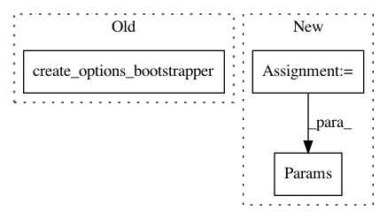

8e2d975972a3188d0a017bdc607c7c25b0bf9ac7,src/python/pants/engine/internals/graph_test.py,TestCodegen,test_generate_sources,#TestCodegen#,801
Before Change
GenerateSmalltalkFromAvroRequest(
hydrated_protocol_sources.snapshot, wrapped_tgt.target
),
create_options_bootstrapper(),
),
)
assert generated_sources.snapshot.files == ("src/smalltalk/f.st",)
After Change
self.union_membership = self.request_single_product(UnionMembership, Params())
def test_generate_sources(self) -> None:
bootstrapper = create_options_bootstrapper()
protocol_sources = AvroSources(["*.avro"], address=self.address)
assert protocol_sources.can_generate(SmalltalkSources, self.union_membership) is True
// First, get the original protocol sources.
hydrated_protocol_sources = self.request_single_product(
HydratedSources, Params(HydrateSourcesRequest(protocol_sources), bootstrapper)
)
assert hydrated_protocol_sources.snapshot.files == ("src/avro/f.avro",)
// Test directly feeding the protocol sources into the codegen rule.
tgt = self.request_single_product(WrappedTarget, Params(self.address, bootstrapper)).target
generated_sources = self.request_single_product(
GeneratedSources,
Params(
In pattern: SUPERPATTERN
Frequency: 3
Non-data size: 3
Instances
Project Name: pantsbuild/pants
Commit Name: 8e2d975972a3188d0a017bdc607c7c25b0bf9ac7
Time: 2020-08-07
Author: 14852634+Eric-Arellano@users.noreply.github.com
File Name: src/python/pants/engine/internals/graph_test.py
Class Name: TestCodegen
Method Name: test_generate_sources
Project Name: pantsbuild/pants
Commit Name: 07a3ac8be168f626c92f2c066f9000ea969a11a0
Time: 2020-06-24
Author: 14852634+Eric-Arellano@users.noreply.github.com
File Name: src/python/pants/backend/python/rules/python_sources_test.py
Class Name: UnstrippedPythonSourcesTest
Method Name: test_filters_out_irrelevant_targets
Project Name: pantsbuild/pants
Commit Name: 07a3ac8be168f626c92f2c066f9000ea969a11a0
Time: 2020-06-24
Author: 14852634+Eric-Arellano@users.noreply.github.com
File Name: src/python/pants/backend/python/rules/python_sources_test.py
Class Name: StrippedPythonSourcesTest
Method Name: test_filters_out_irrelevant_targets